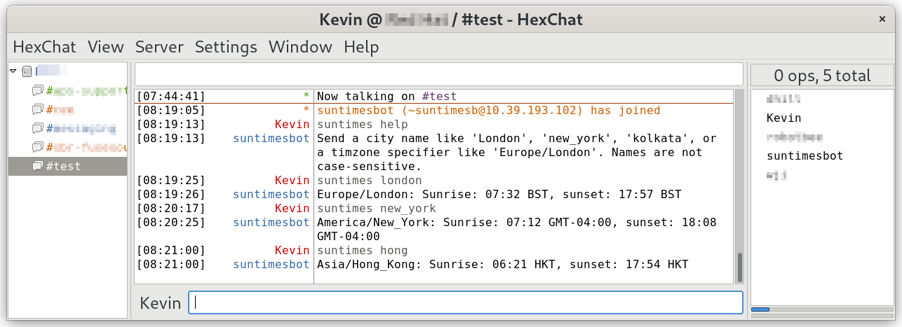

Using Apache Camel to implement an IRC bot

In this article I describe how to implement an IRC bot (automated conversation agent) using Apache Camel. Camel's IRC support is comprehensive, so the implementation of a simple bot is quite straightforward. The complexity comes, if it comes anywhere, in analysing the IRC conversation and generating suitable responses. My simple application is a little more complex than "Hello, World" in that respect, but not much more.
The Camel documentation explains the usage of the IRC support in detail. What the documentation doesn't do, unfortunately, is to give any guidance on how to use this support in a practical application. I was not able to find any full, practical examples that go beyond "Hello, World", so I have written one.
I have used the Quarkus framework to host my Camel routes, although that's just to make configuration easy. You could just as easily write a stand-alone Java application, or use Spring Boot as a framework. I won't be discussing framework issues at all in this article -- the actual Camel implementation is the same in all cases. I present some snippets of source code, but not the complete application. Full source code is available from my GitHub repository.
What an IRC bot does
Although it's somewhat old-fashioned, IRC is still widely used, particularly in IT organizations. A bot (presumably short for 'robot') is a piece of software that monitors IRC conversations, and provides automated responses where it is appropriate to do so.
A bot might, for example, detect people's names in a conversation, and automatically inject their contact details. Or it might provide timely alerts about certain events -- planned meetings, for example.
My example responds with sunrise and sunset times in a particular city. It's not necessarily a useful application, but it does demonstrate the essential features of a bot.
In practice, a bot might subscribe to particular IRC channels, and monitor conversation on those channels. Alternatively -- or, perhaps, in addition -- it might respond to personal messages outside of a channel. Camel's IRC support allows an application to subscribe to multiple channels, but it need not subscribe to any channels at all, and rely entirely on direct messages.
IRC clients differ in the way they allow users to send direct messages to other users (or bots). In most cases, however, you can fall back on the traditional command:
/msg some_nickname text...
My application handles both these forms of communication -- channel messages and direct messages. I would expect that, if a message is sent directly to the bot, it would always result in a response -- even if that response is an error message. However, most messages sent to a channel will, presumably, not evoke a response from the bot.
The screenshot below shows the bot at work, with the Hexchat IRC client providing the user part of the conversation. The bot, of course, does not have a specific client -- it is the client.

Note:
I'm assuming a reasonably thorough knowledge of Apache Camel in this article.
The basic Camel route
The essential outline of a Camel route that handles IRC conversations looks like this:
from ("irc:mynick@server:port?channels=foo,bar")
// Work out if this message is for me. If it is,
// process it, and set the Camel body to the
// reponse
.to ("irc:mynick@server:port);
I've omitted a lot of detail, of course, but you can see
that the actual IRC
support is almost completely handled by Camel. The endpoint URI
specifies the server, the bot's nickname, and channels to which to subscribe.
You can connect to a TLS-encrypted IRC server using ircs
rather than irc as the endpoint name, but you'll
probably need additional configuration. Similarly, if the IRC server
requires authentication, you'll need to specify credentials or a client
certificate, depending on what the server accepts. These options
are all described in the
Camel documentation.
Notice that the .to() endpoint need not be the same
IRC server as the one the from() endpoint is
subscribed to -- in fact, it need not
be an IRC server at all or, indeed, anything. However, if the
targets of the from() and to() endpoints
are the same server with the same credentials (if any),
Camel is smart enough to realize that it can share a connection for
both sending and receiving messages.
Is the message for me?
The bot probably won't respond to every message posted to every channel it monitors. However, it will most likely have to respond to messages directed directly to it, even if those messages can't be processed. Before making such a determination, however, the application will have to be sure that the message is even one that contains text.
The problem is that, once subscribed to a channel, the Camel route
will receive every notification from the IRC server, including
things like users joining and disconnecting. The type of the
message is set by the Camel IRC consumer into an exchange
header irc.messageType. All text messages are of
type PRIVMSG. Although this name seems to denote a
private message, all text messages are of this type --
this is the way the IRC protocol works.
Here is a way to specify in a Camel route that action is to be
taken if the appropriate messageType header is
set:
from ("irc:mynick@server:port?channels=foo,bar")
.choice()
.when (header ("irc.messageType").isEqualToIgnoreCase("PRIVMSG"))
.to ("direct:privmsg")
.end();
If the message is of the proper type, I'm sending it to another
endpoint called privmsg. This is just for the purposes
of organization: I could just embed the rest of the logic between
when() and end(), but nesting these
constructs can easily become unmanageable.
Assuming the message is of the correct type, the next thing to
check is that
it applies to this application. This will be true if either
(a) it is directed to the application's IRC nickname,
or (b) it contains some
text that the application recognizes. For (a), we know that
the message was sent
specifically to this application if the irc.target
header contains the application's nickname. If
the message was sent to the channel,
then this header will contain a channel name, which will always
be preceded by "#".
For case (b) -- a channel message I recognize -- the logic might,
in practice, be quite complex. In my simple application, however,
I handle all channel messages that begin with suntimes,
followed by a space.
Expressing these tests in a Camel route is a little fiddly and, to be frank, if the logic were even slightly more complicated than this, I would revert to using ordinary Java. Still, here's how it can be done using Camel:
from ("direct:privmsg")
.choice()
// The message is for me if irc.target is my own nick, or...
.when (simple ("${header.irc.target} == '{{irc.mynick}}'"))
.to ("direct://for_me")
.end()
.choice()
// ... if the body starts with my keyword
.when (simple ("${body} startsWith '{{irc.mykey}} '"))
.to ("direct://for_me")
.end();
Again to make things more readable, I've had this code invoke a
new endpoint for_me when the message is definitely for
this application.
Processing the message
I'm not brave enough to try to express the actual logic of the
bot -- sunrise and sunset calculation -- as a Camel route. I've implemented
the for_me endpoint as a direct call on a method in a Java
class called IrcBean. The makeIrcResponse()
method takes the message body -- which will be the IRC text -- as
an argument, and returns the intended response as the new message body.
from ("direct:for_me")
.bean (new IrcBean(), "makeIrcResponse(${body})")
Incidentally, if you are using the Quarkus framework, and intend to compile the application to native code and run without a Java JVM, you'll need to make special provision for the fact that IrcBean is loaded by name. The native compiler will not compile this class if it does not think it is aactually used. This is a fairly common problem with Camel, where loading
classes by reflection is idiomatic. A simple way to tell the compiler that
the class is loaded by reflection is to use a Quarkus annotation:
import io.quarkus.runtime.annotations.RegisterForReflection;
@RegisterForReflection
public class IrcBean
{
}
I'm not going to describe how the IRC message is processed in this application, because it's just a heap of mathematics. The processing of the message will, of course, depend entirely on what the bot actually does.
Where should I send the response?
It seems reasonable that, if the bot is processing a message that was sent to it directly, it should respond to the specific user that sent the message. However, if it was invoked by a channel message, it should respond to the channel.
We've already seen that the header irc.target will contain
the name of the channel, if the message was sent to a channel. However,
this header does not identify the sender, if the message was
sent directly. In that case, we need to examine the
irc.user.nick header, which will identify the sender's
nickname.
To direct the message generated by the bot to the right place, we set the
header irc.sendTo before invoking to(irc:...).
To send to a channel, we use the channel name with its "#". To send
to a user, we just use the user's nickname.
Closing remarks
I suspect that Camel's IRC support is not widely used; IRC itself is decreasingly prominent in the modern IT industry. However, Camel's support is extensive; with Camel, the outline of an IRC bot can be created in about a hundred lines of Java code.